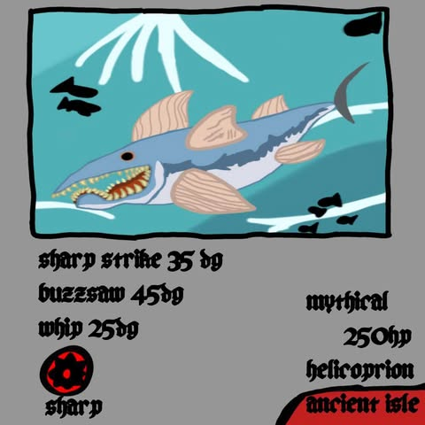

Home
Helicoprion

The Helicoprion is a Mythical fish caught in the Ancient Isle. Due to its high rarity,
It makes for a challenging catch, moving sporadically across the fishing bar. While catching,
a -70% progress speed decrease is inflicted on the player. This is also a type of SHARP Fish
Attacks
Sharp Strike
This attack deals 35 damage!
Buzzsaw
This attack deals 45 damage.
Whip
This attack deals 25 damage.